The results.
Repellency, shedding, 20 wash cycles and 200 abrasion passes, and the worn surfaces under the electron microscope, including the parts that did not go the way I hoped.
Contact angle of my coatings on cotton, similar to Finisterre's finish on its own fabric (132°). On Finisterre's fabric my emulsion reached 108°.
Roll off before washing on the same fabric. The commercial finish was far ahead of my emulsion.
The commercial finish's roll off over 20 wash cycles, while its contact angle moved by 3°. My emulsion on the same fabric ended in the same place, around 80°.
Three swatches per condition from one coated batch, and lab screening methods for washing and abrasion rather than textile standards. Read the trends as consistent, not as firm statistics. Testing finished July 2026, and the full analysis is in the dissertation (PDF, 17 MB).
Seven samples, two fabrics.
Finisterre's commercial finish sits on Finisterre's fabric, so the fair comparison with it is my emulsion on that same fabric, F-A1.
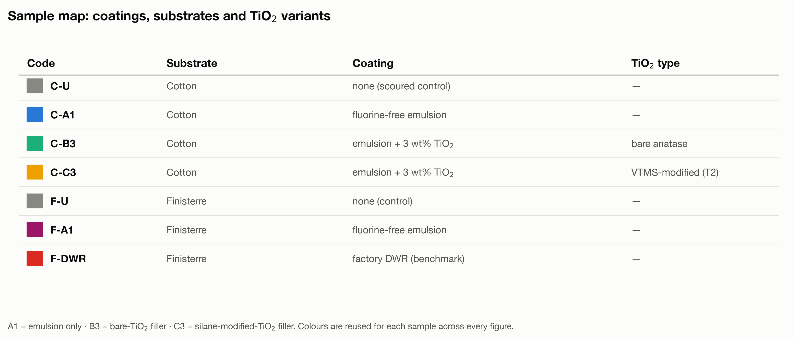
Five coatings, two uncoated controls, three swatches of each.
More detail
C-U and F-U are uncoated cotton and uncoated Finisterre fabric, the controls. A1 is my emulsion only, no particles. B3 is emulsion plus 3 wt% bare anatase titanium dioxide. C3 is emulsion plus 3 wt% anatase treated with a silane (VTMS). F-DWR is Finisterre's existing commercial finish, the benchmark.
All swatches of a condition were cut from one coated batch.
Source: sample map, n = 3 swatches per codeEvery coating makes water bead.
Water contact angle is how round a drop sits on the surface. Above 90° counts as hydrophobic, and every coating clears that line.
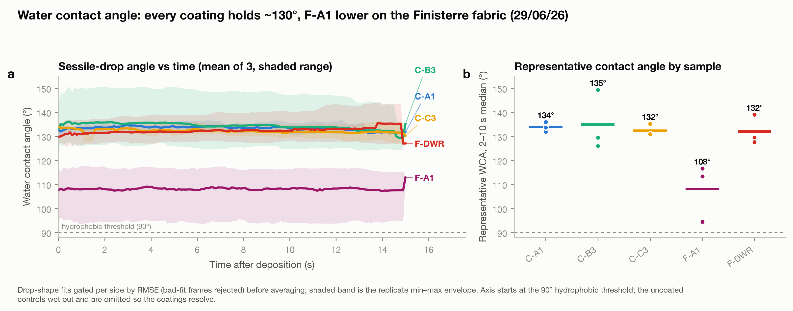
On cotton my coatings bead water about as well as the commercial finish does on its fabric.
More detail
The three cotton coatings sit at 132 to 135°, within a few degrees of each other. Finisterre's commercial finish sits at about 132°, but on a different fabric, so this is a similar number rather than a like for like match. On the same Finisterre fabric my emulsion (F-A1) is lower, at about 108°. Uncoated Finisterre fabric wets out, its contact angle collapsing as the drop soaks in.
Static contact angle does not separate the two particle treatments, bare against silane treated. If the silane helps, it should show up in shedding and durability, not here.
An early reading put uncoated cotton near 110°, but that drop was resting on loose fibres across the weave rather than on the fabric. Measured again, uncoated cotton wets out at about 39° (one swatch), so the coated fabrics sit roughly 95° above their own baseline.
Superhydrophobic usually means above 150° with drops that roll at a few degrees. None of these fabrics are that, the commercial finish included.
Source: 29 Jun 2026, contact angle videos (wca_baseline in the data file). Per swatch: median angle 2 to 10 s after the drop lands, poor fits rejected. Dots are swatches; the rule marks their mean.Beading is not the same as shedding.
Roll off angle asks the harder question: tilt the surface, and at what angle does the drop actually move? Both tests here were done before any washing, and on this one the commercial finish is well ahead of mine.
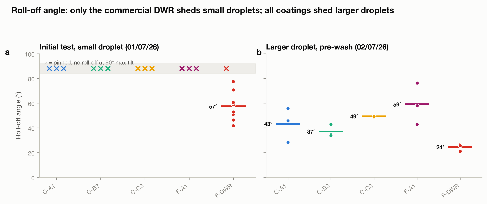
Fresh coatings bead but hold on to a smaller drop. Only the commercial finish let one go.
More detail
With a smaller drop, only the commercial F-DWR released: 8 of its 9 drops across three swatches moved, at 42 to 78° (57° on average for the drops that moved). Every drop on my coatings stayed pinned, even tilted to the 90° limit. The next day, still before any washing, I repeated the test with a larger drop of about 33 µL and every coating released. Drop size is the only thing that changed between the two tests, and on the same fabric the commercial finish was still clearly the better shedder.
Source: RollOff_angles.csv and ROA_durability_long.csv, 1 and 2 Jul 2026. Smaller drop: 3 drops per swatch on F-DWR, 1 per swatch on the others. Larger drop: 1 per swatch, n = 3. Triangles are drops that had not moved by 90°; they are never averaged in, and a mean marked * uses only the drops that moved.| Sample | What it is | Roll off angle |
|---|---|---|
| F-DWR | Commercial finish, Finisterre fabric | ~24° |
| C-B3 | Emulsion + bare anatase, cotton | ~37° |
| C-A1 | Emulsion only, cotton | ~43° |
| C-C3 | Emulsion + silane treated anatase, cotton | ~49° |
| F-A1 | Emulsion only, Finisterre fabric | ~59° |
On my coatings the back edge of the drop grips the fabric instead of releasing. Why contact angle is not enough
Abrasion and washing tell opposite stories.
I put the whole sample set through 200 abrasion passes and 20 wash cycles, measuring roll off and contact angle on the same swatches at every stage. Both wear tests are lab screening methods rather than textile standards.
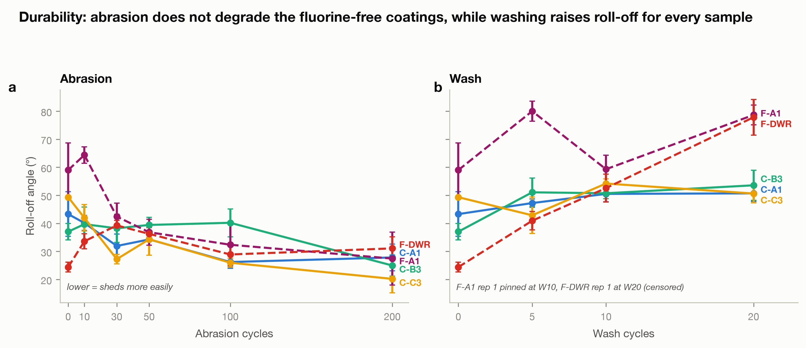
Washing makes every sample shed worse, the commercial finish most. With abrasion, roll off mostly fell.
More detail
Washing is the clearest result. The commercial finish went from 24° to 78° over 20 wash cycles, the steadiest trend in the whole dataset, and one of its three swatches stopped releasing the drop altogether. On the same fabric my emulsion went from 59° to 79°, so after 20 cycles the two sit in the same place. On cotton my coatings ended between 51 and 54°: C-C3 barely moved (49° to 51°), C-A1 rose about 7° and C-B3 about 17°. Cotton is a different fabric, so those are not a head to head with the commercial finish.
Abrasion went the other way: roll off fell on my coatings, even though the microscope shows the cotton yarns frayed and snapped. I do not read that as the coating getting better. The samples that started worst improved most, which is what measurement noise alone would produce, and the cause is not settled. On the same fabric the commercial finish started well ahead (24° against 59°), and after 200 passes the two read about the same (31° against 27°).
Source: ROA_durability_long.csv, 2 to 14 Jul 2026, larger drop (about 33 µL), the same 3 swatches at every stage. Lines join the mean of the swatches that released; small dots are single swatches. A swatch that stopped releasing (F-A1 at 10 cycles, F-DWR at 20) shows as a triangle and is left out of that mean, drawn as an open circle, so those two means look better than they were. That is why F-A1 appears to dip at 10 cycles. (Without JavaScript the static figure shows means with standard error bars.)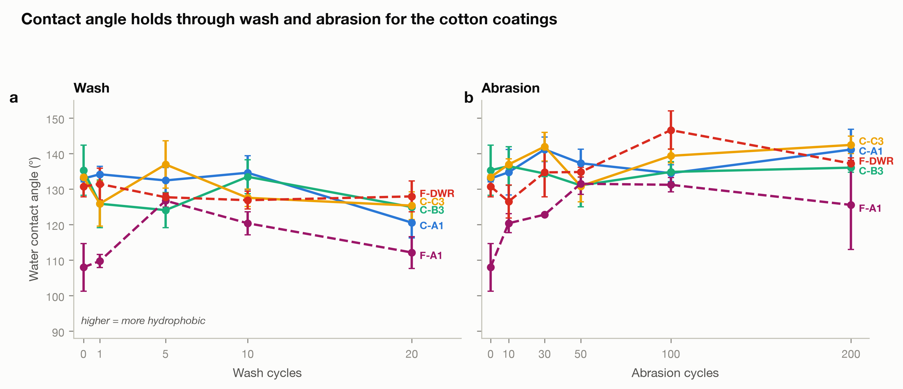
Contact angle moves far less than roll off does.
More detail
On average the cotton coatings and the commercial finish stayed above 120° through 20 wash cycles and 200 abrasion passes; my emulsion on Finisterre fabric sat between 108 and 131°. Washing did lower the cotton coatings by 8 to 13°, though with three swatches that is within the spread between them, and abrasion nudged the angles up. The contrast with roll off is the point. On the commercial finish, 20 wash cycles raised roll off by 53° while contact angle moved by 3°. Judged on contact angle alone, that finish would have looked unchanged.
Source: WCA_durability_long_median.csv, 29 Jun to 14 Jul 2026, same reduction as above. Lines join the mean of 3 swatches; small dots are single swatches. The before wear values here come from the durability file and differ from the chart above by 1.5° at most. (Without JavaScript the static figure shows means with standard error bars.)The worn swatches, tilted by hand. An illustration, not a measurement.
More detail
A drop placed on each end point swatch, then the slide tilted until the drop moves or stays put. In order: the commercial finish, cotton C3 and Finisterre A1 after 200 abrasion passes, then the commercial finish and Finisterre A1 after 20 wash cycles. These clips were filmed by hand after the test series had finished, so they show the behaviour rather than measure it. The measured values are in the charts: after 20 wash cycles the commercial finish needed about 78° of tilt and one swatch never released, while after 200 abrasion passes every sample released below about 31° on average.
Roll off demonstration, filmed after testing ended, 14 Jul 2026. Illustrative only.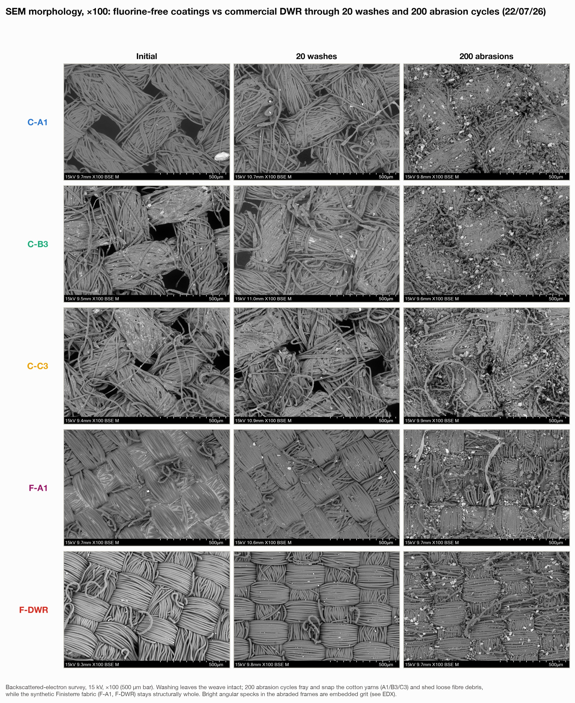
Under the microscope, washing leaves the weave intact. Abrasion frays the cotton.
More detail
Twenty wash cycles leave every weave intact. Two hundred abrasion passes fray and snap the cotton yarns, while the synthetic Finisterre fabric keeps its structure; the bright specks on the abraded samples are grit from the abrasive paper. Worth noting: the cotton roll off numbers were still easing down on fabric this worn, which is another reason not to read the abrasion trend as the coating getting better.
Source: fig21, SEM at x100 on spare worn swatches, 15 kV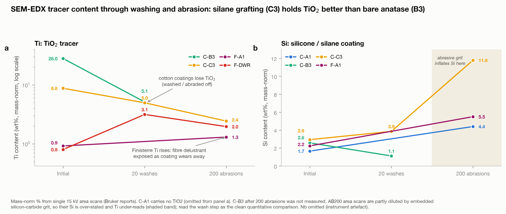
Coating signals are still there on the worn swatches. The silane treated particles may hold on better through washing.
More detail
EDX on the worn swatches tracks the coating's elements through the wear series. Silicon, which comes from both the silicone and the silane, was still detected on the cotton coatings after both tests, and in infrared the silicone bands sat at 100 to 124% of their starting level after 20 wash cycles and 200 abrasion passes. That shows coating material is still present in the areas sampled; it does not show the film is intact or bonded. The titanium is the interesting part: the bare particles lose about four fifths of their titanium signal to washing while the silane treated ones fall more gently. That is the first measurement where the two particle types look different, but it is one scan per point, so it is a hint that needs repeats. The commercial finish shows no silicone bands, so it uses a different chemistry, though that alone does not say what it is.
Source: fig23 and FTIR band ratios, single area scans per stageWhat is actually on the fabric.
SEM-EDX reads the elements on the fibre surface. Titanium tracks the titanium dioxide I added, and silicon tracks the silicone and silane in the coating.
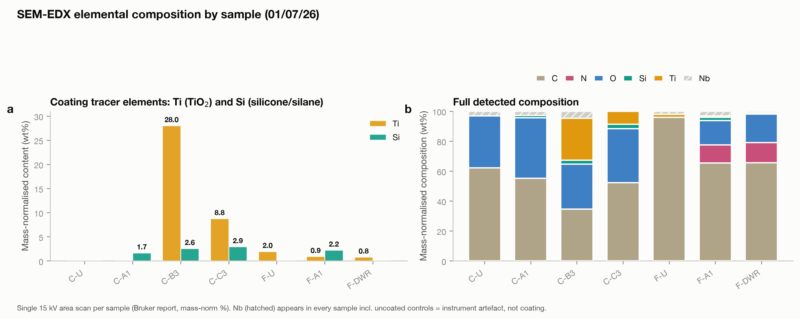
The titanium and silicon tracers confirm the particles and silane are on the fabric.
More detail
On cotton, titanium is near zero on the uncoated and emulsion only samples, then rises to 28% on the bare anatase C-B3 and 8.8% on the silane treated C-C3. Silicon is zero uncoated and 1.7 to 2.9% across the coatings, highest on C-C3 where the silane adds its own silicon. The commercial F-DWR shows almost nothing here: about 0.8% titanium and no silicon, so it is a different chemistry to mine. These are single area scans without standards, so read them as showing what is present rather than a precise loading.
Source: fig07, SEM-EDX at x2000, mass normalised %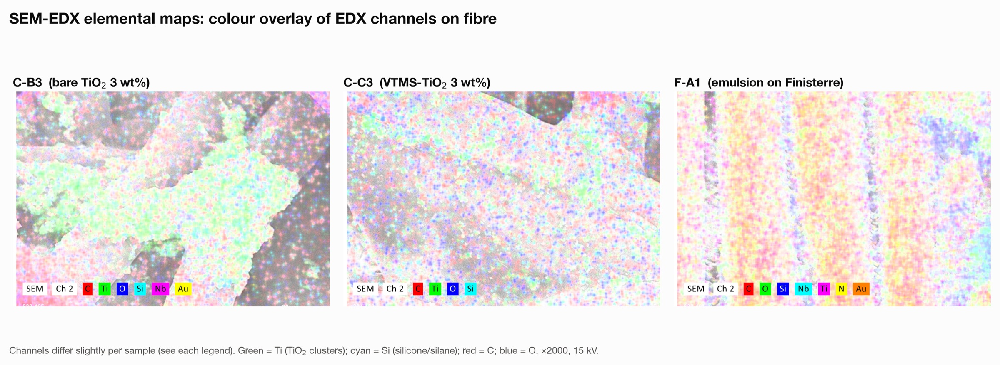
The coating spreads across the fibres, not in clumps.
More detail
Elemental maps put the titanium and silicon across the coated fibres rather than in isolated clumps, which is what I want for an even coating.
Source: fig08, SEM-EDX elemental maps (B3, C3, F-A1)What the infrared shows.
Infrared spectroscopy checks the chemistry rather than the elements. On the titanium dioxide powder it is where the silane treatment shows up.
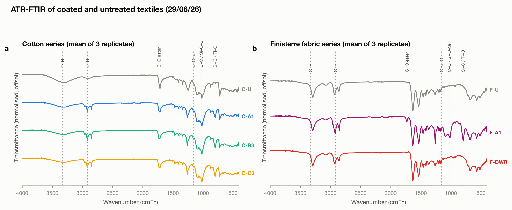
The coating chemistry is on the fibre.
More detail
The carbon hydrogen bands grow with coating, and siloxane (Si-O-Si) bands show up most clearly on Finisterre fabric, where cotton's cellulose does not mask them. This method is semi quantitative, so it confirms the coating chemistry but cannot on its own separate bare from silane treated anatase.
Source: fig04, ATR-FTIR, three spectra per sample, means shown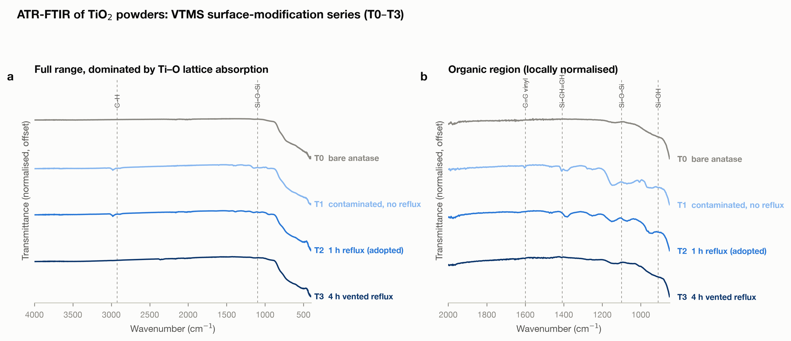
Weak signs of silane on the particles.
More detail
Bare anatase is flat through the organic region, while the silane treated powders pick up carbon hydrogen and siloxane bands. The signal is weak, and it shows silane is present rather than proving it is bonded to the particle surface, but it is the clearest evidence I have, and it is why I chose the vented reflux batch (T2) to carry into the C3 coating.
Source: fig05, ATR-FTIR of TiO2 powders, T0 to T3The measurements behind the headline results.
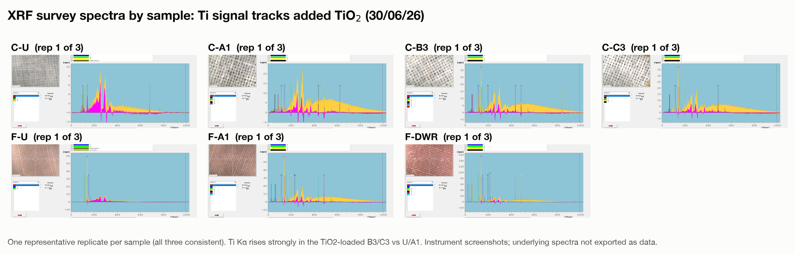
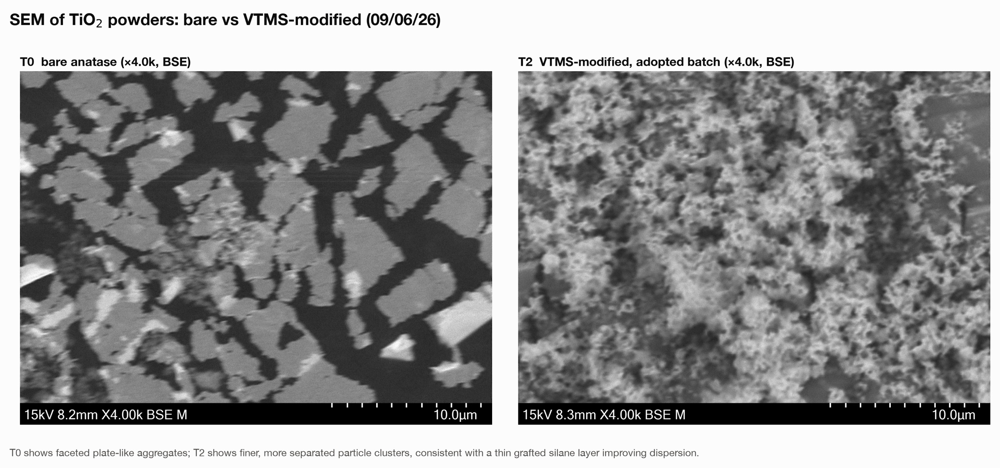
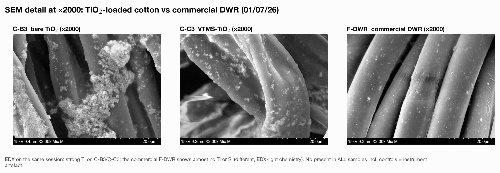
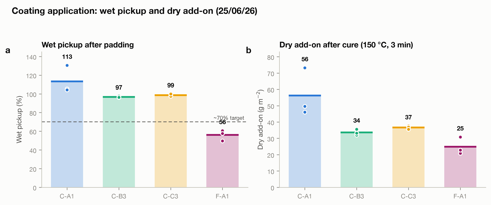
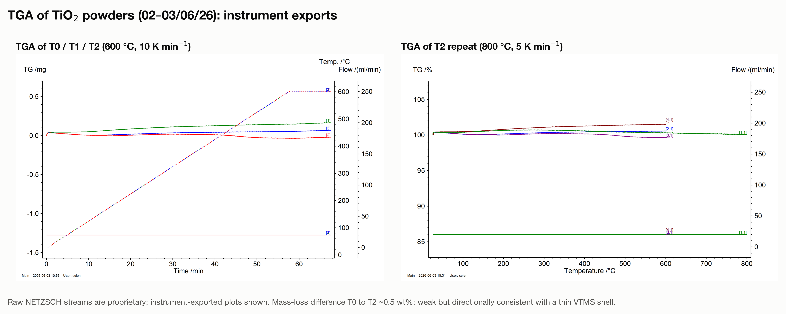
How it was measured.
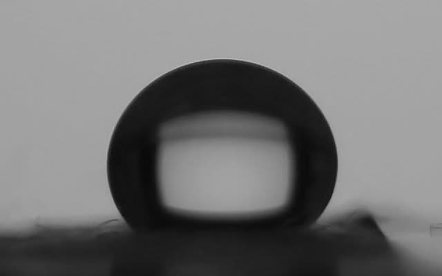
The frame by frame chart needs JavaScript. The numbers are in goniometer_example.csv.
How one drop becomes one number: bad fits are thrown out before averaging.
More detail
The goniometer films the drop and fits its outline in every frame, giving a separate angle for the left and right edges. On this C-A1 swatch, loose fibres at the left edge made that side's fit jump about, to 140 to 150° with a poor fit, while the right side held steady near 136°. The instrument's own average of the two sides would have read about 139°. Throwing out each side whenever its fit error (RMSE) is above 1.0, smoothing, and taking the median from 2 to 10 s gives 135.9°, the value this swatch contributes to the results above. Every contact angle on this page went through the same steps.
Source: C-A1 swatch 1, 29 Jun 2026, 521 frames at 30 per second. Every other frame is plotted; the file goniometer_example.csv has all of them.The methods in full
- Coating. Swatches dipped in the bath for 60 s, padded by hand with a weighted roller between lint free paper, and cured at 150°C for 3 minutes. Cotton was scoured first; the Finisterre fabric was the same cloth as the commercial finish, supplied without a finish.
- Samples. Three swatches per condition, all cut from one coated batch, so the spread shows swatch to swatch variation, not batch to batch. The durability series measured the same 1.5 cm swatches again at every stage; separate spare swatches went to the microscope.
- Contact angle. Ossila contact angle goniometer. Each drop was filmed at 30 frames per second and fitted frame by frame by the software; frames with a poor fit were rejected. Each swatch's value is the median angle 2 to 10 s after the drop lands, and the reported value is the mean of three swatches.
- Roll off angle. Tilting stage read from an angle gauge, up to 90°. The first test used a smaller drop; the second test and the whole durability series used a drop of about 33 µL. A drop that had not moved by 90° is recorded as pinned, marked on the charts, and left out of that average, which makes the affected average look better than it was.
- Wash cycle. 10 minutes in 500 mL of deionised water with 2.5 g of non ionic detergent (Alcojet) at 40°C, on a magnetic stirrer at 300 rpm, whole sample set together, then rinsed and air dried overnight with no heat. A lab screening wash, not a domestic wash or ISO 6330.
- Abrasion pass. One 10 cm stroke, about 3 s, of a 1.5 cm swatch on a microscope slide under 157 g (about 6.8 kPa), drawn by hand across 1000 grit sandpaper. A lab screening method, not Martindale.
- Microscopy and composition. Hitachi TM4000Plus SEM at 15 kV after 10 nm of gold. EDX from single area scans without standards. ATR-FTIR on a Shimadzu IRSpirit with a QATR-S accessory, three spectra per sample. Benchtop XRF on a Fischerscope XAN 250.
- Statistics. The charts show every swatch, with lines and rules at the mean. With one batch and three swatches, the trends are described rather than claimed as significant; the dissertation reports the tests and corrections.
- Data. Every swatch value behind the charts is in observations.csv, with column notes in the data README. It is built straight from the lab exports, not read off the figures.
The short version.
On cotton my coatings bead water as well as Finisterre's finish does on its own fabric. Fresh, they do not shed as well: on the same fabric the commercial finish was far ahead. Washing took that lead away, and it did so while contact angle barely moved. The clearest lesson is about measurement: contact angle, the number most often reported, missed a change in shedding that roll off picked up easily.
The lab work is finished, and the full writeup is in my dissertation (PDF, 17 MB). If the work were taken further, these would settle the open questions.
- Fix the fresh shedding. A rinse test and a repeat at controlled coating weight would show whether leftover surfactant or an over thick film is doing the pinning.
- Use standard tests. A spray rating (ISO 4920), a rain test (Bundesmann, ISO 9865), washing to a standard method, and a fixed drop volume for roll off.
- Measure what holds the drop. Advancing and receding angles, on a tilting plate at one drop volume, would show directly why a drop pins.
- Separate drying from damage. Some finishes recover their repellency after heat, and these swatches were only air dried, so some of the wash loss may be recoverable.
- Repeat across batches. A second coated batch, and repeat EDX and infrared scans on worn swatches, would show whether the silane treated particles really do hold on better.